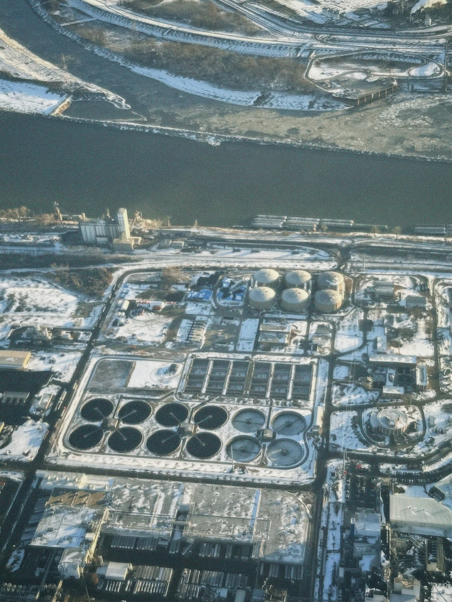

Агрохимия
Агрохимия
Удобрения и пестициды дают диффузный сток. Риск — эвтрофикация, “цветение”, дефицит кислорода и токсичные эффекты в пищевых цепях.
Антропогенная нагрузка редко приходит “одним каналом”. Здесь собраны четыре типовых источника, которые чаще всего меняют качество воды и состояние экосистем — от водосбора до моря.
Нажмите на карточку, чтобы перевернуть
Удобрения и пестициды дают диффузный сток. Риск — эвтрофикация, “цветение”, дефицит кислорода и токсичные эффекты в пищевых цепях.
Плёнки и эмульсии ухудшают газообмен, поражают биоту и закрепляются в осадках. Последствия зависят от типа нефти, температур и гидродинамики.
Частицы удерживают загрязнители на поверхности, переносятся течениями и попадают в организмы. Важно различать источники: износ шин, текстильные волокна, упаковка.
Коммунальные и промышленные стоки повышают органическую нагрузку и приносят специфические вещества. Нужны контроль, очистка и привязка мер к источникам.
Подсказка: наведи мышь или сфокусируй карточку (Tab) — и она перевернётся.
Чтобы “фактор” не оставался абстракцией, полезно мыслить цепочкой: источник на территории → путь переноса → зона накопления → видимый эффект в водоёме и биоте.
